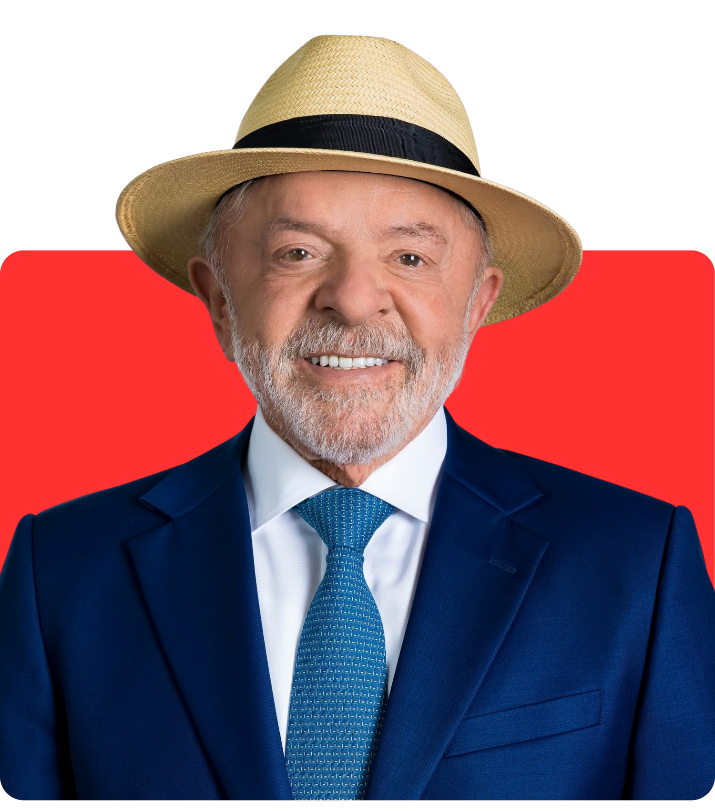

Aguardando dados oficiais do TSE...
Eleito

Lula
PT 13
0,00%
0 votos
Eleito
Flávio Bolsonaro
PL 22
0,00%
0 votos
Urnas apuradas: 0,00%
Atualização TSE: --:--:--
Diferença: 0 votos
0,00% apurado
Votos Válidos: 0
Abstenções: 0
Brancos: 0
Nulos: 0
Mapa por Estado
PT (Lula)
PL (Flávio)
Evolução da apuração em tempo real